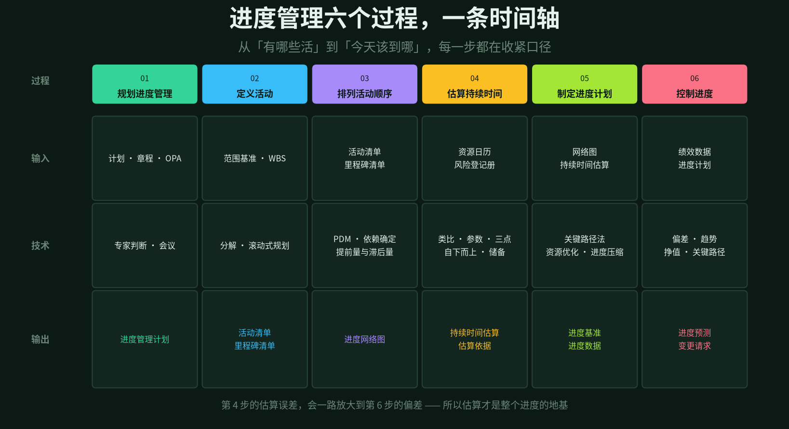
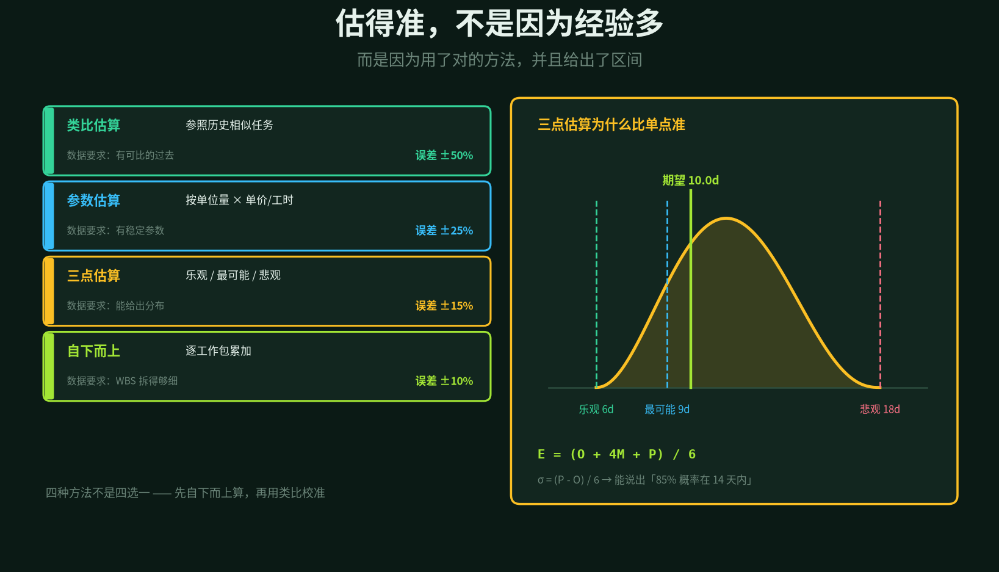
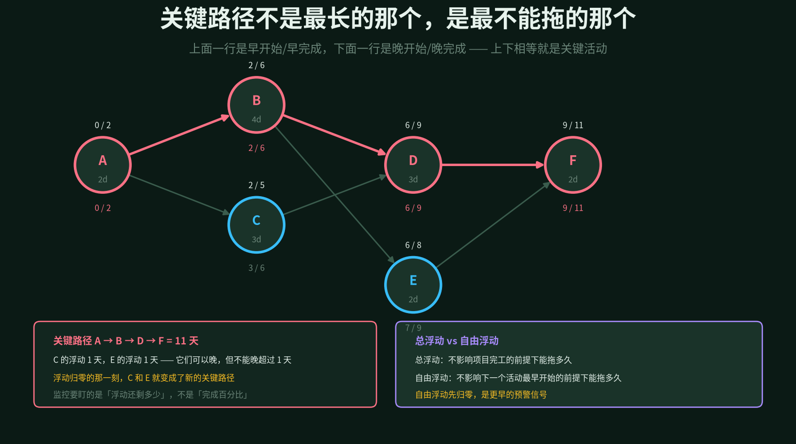
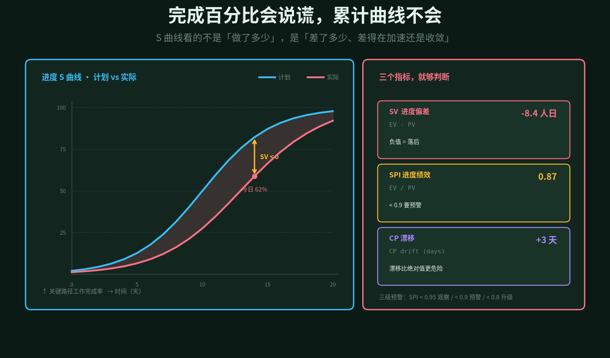
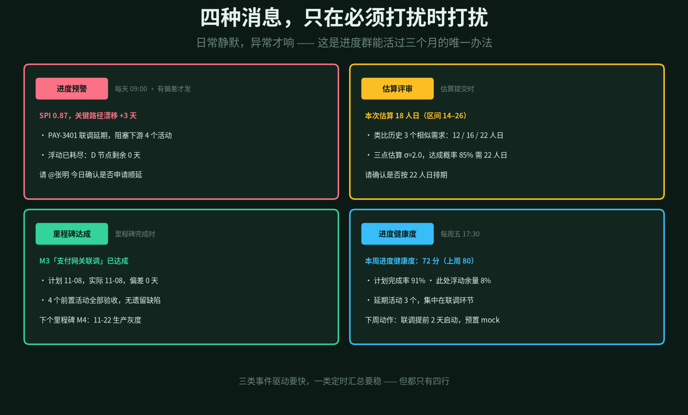

进度管理最容易被误解成一件事：画甘特图。
于是很多项目都有甘特图，也都很漂亮，然后呢？第三天开始就没人看了，因为图上的计划和现实早就不是一回事。到了月底，图还是那张图，项目已经滑了两周。
真正难的从来不是排计划，是在计划注定会错的前提下，尽早知道它错了多少。
进度不是排出来的，是估出来的、盯出来的。
上一篇把范围写成了事实，这一篇处理第二件事：时间。范围确定「做什么」，进度确定「什么时候到」。范围错了会做无用功，进度错了会错过窗口期，后者往往更贵。
和上一篇一样的结构：六个过程的输入输出、两个重点环节（估算和偏差监控）拆到底、六份文档模板、归档方式、四种群消息，最后给出 SKILL 的目录结构。
1
六个过程，误差一路放大
进度管理的六个过程，是一条不断收紧的链路，也是一个不断放大的误差链。
规划进度管理 定规则：用什么方法估算、多久报一次进度、偏差多少要升级。这份计划决定了后面所有动作的粒度。
定义活动 把 WBS 工作包拆成活动，产出活动清单和里程碑清单。注意活动和交付物不是一回事——一个工作包可能对应五个活动。
排列活动顺序 找出活动之间的依赖，画出网络图。这一步最容易被草草了事，但它决定了关键路径对不对。
估算持续时间 给每个活动一个工期。这是整条链上最容易出错的一步，也是 AI 最能帮上忙的一步。
制定进度计划 算关键路径、识别资源冲突、必要时压缩工期，产出进度基准。
控制进度 持续比对计划和实际，算偏差、做预测、提变更。这一步是唯一一个贯穿全程的。
误差放大的逻辑很朴素：假设每个活动的估算误差是 ±20%，十个串联活动下来，整体误差可能到 ±60%。如果这些活动里还有三个在关键路径上，项目就必然延期。
所以对这一篇来说，第 4 步和第 6 步是重点，其余四步是支撑。

图 1 · 六个过程的输入、技术、输出
2
估算：先给区间，再给数字
「这个功能要几天？」——如果你只能回答一个数字，那这个数字八成是错的，而且没人知道错多少。
四种估算方法，误差范围差着一个数量级：
· 类比估算 找一个过去做过的事情参照。快，但要求真的「可比」，误差 ±50%
· 参数估算 按单位量乘单价，比如「每个接口 0.5 人日 × 12 个接口」。误差 ±25%
· 三点估算 乐观、最可能、悲观各给一个值，加权求期望。误差 ±15%
· 自下而上 每工作包单独估，逐层累加。最准，也最贵，要求 WBS 拆得够细
实际用法不是四选一，而是两种一起上：先自下而上算出底数，再用类比去校准。如果自下而上算出 20 人日，但历史上三个相似需求分别花了 12、16、22 人日，那就得回头问一句：这 20 是不是估高了？
三点估算的关键在公式：
E = (O + 4M + P) / 6 # 期望工期
σ = (P - O) / 6 # 标准差
例：O=6, M=9, P=18
E = (6 + 36 + 18) / 6 = 10 天
σ = (18 - 6) / 6 = 2.0 天
→ 68% 概率在 8–12 天内完成
→ 85% 概率在 12 天内完成（E + 1σ）
→ 95% 概率在 14 天内完成（E + 2σ）
这一步的意义在于，你能说出一句以前说不出的话：按 10 天排期，有一半概率要延期；按 12 天排，八成能守住。这句话说出口，排期就从拍板变成了决策。
AI 在这里最值钱的不是算公式，是提供校准锚。它从项目知识库里翻出「过去半年，同类需求的实际工期分布」，把类比估算从拍脑袋变成有据可依。
再往下还有储备。应急储备应对「已知的未知」——比如联调总会出问题，那就预留 15%；管理储备应对「未知的未知」，由高层掌握。两笔储备不能混着算，混了就没人知道还剩多少余量。

图 2 · 四种方法的误差量级，与三点估算的分布
3
依赖：图里没画出来的才是风险
活动顺序靠依赖关系串起来。教科书有四类：完成到开始（FS）、开始到开始（SS）、完成到完成（FF）、开始到完成（SF）。实际项目里 90% 是 FS，剩下 10% 才需要想清楚。
真正麻烦的是依赖的四种来源：强制依赖（法规、物理限制）、选择性依赖（团队习惯）、外部依赖（第三方交付）、内部依赖（本项目内）。
人工画网络图，通常只画得出「任务单上写了的依赖」。而那些隐含依赖——服务 A 调用了服务 B 的接口、模块 X 依赖表 Y 的字段、这个需求要等那个需求的配置——全都在人脑子里，一换人就丢。
这是 AI 相对人最有优势的地方。从代码仓库的调用关系、接口定义、数据库外键、配置文件里，它能把技术层面的依赖全部抽出来，变成网络图上的边。
抽出来之后通常会有两个发现：一是依赖比想象的多，二是很多「可以并行」的任务其实串着。第二条直接影响工期估算。
还有提前量和滞后量这两个参数。FS 加 2 天滞后，意思是「A 完成后要等 2 天才能开始 B」，常见于审批、固化、冷却这类场景。这些数字不写出来，排出来的计划就是假的。
4
关键路径：盯浮动，不盯百分比
关键路径是网络图上最长的那条链，也就是决定项目总工期的那条链。上面任何一个活动延期一天，项目就延期一天。
算它的方法很机械：正向推最早开始和最早完成，反向推最晚开始和最晚完成，两者相等就是关键活动。
但对管理者来说，比关键路径本身更重要的是浮动时间还剩多少。
图 3 里，C 和 E 都不在关键路径上，各自有 1 天浮动。这意味着它们可以晚一天，项目不受影响。但如果 C 拖了两天，浮动归零，C 就变成了新的关键路径——关键路径是会漂移的。
所以监控真正该盯的是三个数：关键路径上有几个活动、它们的浮动余量是多少、比上周减少了多少。第三个数字最能说明问题——它意味着风险在累积。
总浮动和自由浮动也要分清。总浮动是「不影响项目完工能拖多久」，自由浮动是「不影响下一个活动最早开始能拖多久」。自由浮动先归零，是更早的预警，因为它意味着下一个活动要被推迟了。
资源冲突是另一类问题。两个活动都指派给了同一个人，在图上它们是并行的，实际上只能串行。这种冲突需要「资源平衡」——不考虑工期的资源优化，或者「资源平滑」——不改变关键路径的前提下调整。
这也是 AI 能做得很好的事：把任务指派、工时、请假记录拉在一起，自动找出「同一个人在同一周被安排了 60 小时」这种情况。

图 3 · 网络图与关键路径，上下相等的才是关键活动
5
偏差监控：三个指标就够
进度汇报里最常见的一句话是「完成了 80%」。这句话几乎没有任何信息量，原因有三。
一是分母不明。80% 的工作量还是 80% 的活动数？二是进度条会跳。最后 20% 往往占了一半时间。三是它只说自己，不说相对计划差了多少。
真正该看的三个指标：
· SV 进度偏差 挣值减计划值。负数就是落后，单位是人日或人时，能直接换算成本
· SPI 进度绩效指数 挣值除以计划值。小于 1 是落后，0.87 意味着「干一天的活只值 0.87 天」
· CP 漂移 关键路径总天数相比基线的变化。这个数字最直接对应「项目会晚几天」
三个数各有用处。SV 说规模，SPI 说效率，CP 漂移说后果。汇报时三个一起给，比给十个百分比有用。
S 曲线补充的是「趋势」。看今天落后 8 人日没意义，要看这两周差距是在扩大还是在收敛。扩大就是系统性延误，收敛可能只是一次性的插曲。
还有一点很重要：挣值只能算「已完成工作的计划价值」，不能算「做了多少比例」。一个活动只有「完成」和「未完成」两种状态，部分完成的按既定规则折算（0/100、50/50 或按里程碑）。用主观百分比算挣值，整个 SPI 就失真了。
预警分三级：SPI 低于 0.95 观察，低于 0.9 发预警，低于 0.8 升级到项目群并 @ 负责人。分级的意义在于让不同严重程度对应不同打扰强度——天天报警的群，最后没人看。

图 4 · S 曲线看趋势，三个指标看程度
6
六份文档，六套字段
和范围管理一样，字段固定下来，AI 才能填空、才能标红、才能生成追问。进度管理对应六份文档。
进度管理计划
四个字段：估算方法与精度、进度报告频率、偏差阈值与升级规则、进度变更流程。第三个字段最容易被忽略，但它决定了什么时候该打扰谁。
活动清单与里程碑清单
五个字段：ACT-ID、所属 WBS 编码、活动描述、完成定义、对应里程碑。第四个字段是关键——「完成定义」写不清，后面的百分比全是扯皮。
进度网络图
四个字段：前置活动、依赖类型、提前量滞后量、依赖来源（强制/选择/外部/内部）。最后一项决定了这个依赖「能不能商量」。
持续时间估算与估算依据
六个字段：O/M/P 三值、期望值、标准差、估算方法、历史参照、假设条件。这份文档是这一篇的核心，模板长这样：
act_id: ACT-042
name: 支付网关联调
method: three_point
O: 6d M: 9d P: 18d
E: 10.0d sigma: 2.0d
confidence: {p68: [8,12], p85: 12, p95: 14}
analogy: [PAY-3120: 12d, PAY-2980: 16d, PAY-3305: 22d]
assumptions:
- 第三方提供测试环境
- 对账口径在联调前确认
contingency: 15% # 已知风险
「假设条件」这一栏特别重要。联调超期，八成是因为某个假设没成立。把假设写下来，后面才能追责到根因，而不是互相指责。
进度基准
四个字段：基线版本、关键路径清单、各活动浮动时间、资源分配表。基准一旦确定，任何变更都要走变更单，不能直接改。
进度预测与变更单
五个字段：SV/SPI/CP 漂移三个指标、完工预测（EAC 工期）、偏差根因、纠偏措施、影响评估。预测要给出区间，不要给单点。
这六份文档入库时同样加 front-matter，字段和上一篇一致：doc_id、doc_type、project、version、status、baseline_at、related。区别只在 doc_type 多了一组取值：schedule_plan、activity_list、network_diagram、duration_estimate、schedule_baseline、schedule_forecast。
进度类的组织过程资产有一个特殊价值：它是下一轮估算的输入。每次项目结束，把「估算 10 天、实际 14 天」这个差值记下来，三年后你的估算能力就建立在这些差值上了。
所以文档归档时，一定要带上实际值。只有计划和估算、没有实际值的知识库，对下一次估算毫无帮助。
估得准的前提，是知道自己以前估错多少。
7
群消息：日常静默，异常才响
进度群最容易变成噪音源。每天一条「今日进度正常」，两周后全员静音。所以消息设计的第一原则是：没事就不发。
进度预警
每天早上一跑，只有出现偏差才发。四行：SPI 与 CP 漂移、具体是哪个活动拖了、浮动还剩多少、@ 谁在什么时候前确认。
@ 人而不 @ 全员，附上「是否申请顺延」这种明确的二选一请求。有具体动作的消息才会被回应。
估算评审
估算提交时发。核心是把区间和历史参照摊开：本次估 18 人日，区间 14–26，历史上三个相似需求是 12/16/22 人日，85% 达成概率需要 22 人日。
这条消息的目的不是通知，是把「要不要按 22 天排」这个决策摆到台面上。不摆出来，默认就会按 18 天排，然后必然延期。
里程碑达成
里程碑完成时发。计划日期、实际日期、偏差天数、前置活动完成情况、下个里程碑。
这是进度管理里唯一的正反馈。团队连着几个月只收到「你落后了」的推送，会形成条件反射式的抵触。里程碑达成的消息必须发，哪怕提前或准时到没什么可说的。
进度健康度
每周五发一次。一个分数、三个指标（计划完成率、浮动余量、延期活动数）、一条根因、一个下周动作。
周报的价值在于连续性。单看「本周 72 分」没有意义，看「上周 80，本周 72，连续三周下降」才有意义。

图 5 · 四类消息，都只有四行
8
SKILL 结构与边界
和 scope-manager 一套骨架，把 templates 和 queries 换掉就行：
skills/schedule-manager/
├─ SKILL.md
├─ templates/
│ ├─ schedule-plan.md
│ ├─ activity-list.md
│ ├─ network-diagram.md
│ ├─ duration-estimate.md
│ ├─ schedule-baseline.md
│ └─ forecast-change.md
├─ queries/
│ ├─ cpm_forward.sql # 正向推最早时间
│ ├─ cpm_backward.sql # 反向推最晚时间
│ ├─ float_burn.sql # 浮动消耗
│ └─ resource_conflict.sql # 同一人被超配
└─ render/
├─ warn.py # 进度预警
├─ estimate.py # 估算评审
├─ milestone.py # 里程碑
└─ health.py # 健康度
三个定时任务：
· 每天 09:00 算 SV/SPI/CP 漂移，超阈值才发预警
· 每周五 17:30 生成健康度，同时把本周估算与实际对比归档
· 每月 1 日 重算全量网络图，检查有没有新出现的隐含依赖
五条边界，写清楚比写漂亮重要。
估算不能替人承诺。AI 给出的是区间和概率，拍板必须是人。一旦 AI 直接对外承诺「14 天交付」，延期时没人会认这个账。
挣值依赖数据真实性。如果任务状态是随手改的、工时是周末补填的，SPI 就是个随机数。先治填报，再谈分析。
关键路径不是永久事实。范围一变、依赖一改，路径就得重算。拿着三周前的关键路径做判断，比不做判断更危险。
压缩工期有代价。加人不是线性的，赶工要花钱，快速跟进会增加返工风险。AI 能算出「压 3 天要加 6 人日」，但要不要付这个代价，是管理判断。
别用它做绩效。SPI 一旦和个人绩效挂钩，所有人都会在周五改状态。进度数据的价值建立在「它反映现实」这个前提上，破坏这个前提只需要一次考核。
范围管的是「做对的事」，进度管的是「按承诺到」。两者合起来，项目管理的骨架就有了一半。
下一篇拆成本管理。那个领域的数据最脏——工时靠人填、采购靠对账、分摊靠拍脑袋，但恰恰是 AI 最容易做出增量价值的地方。